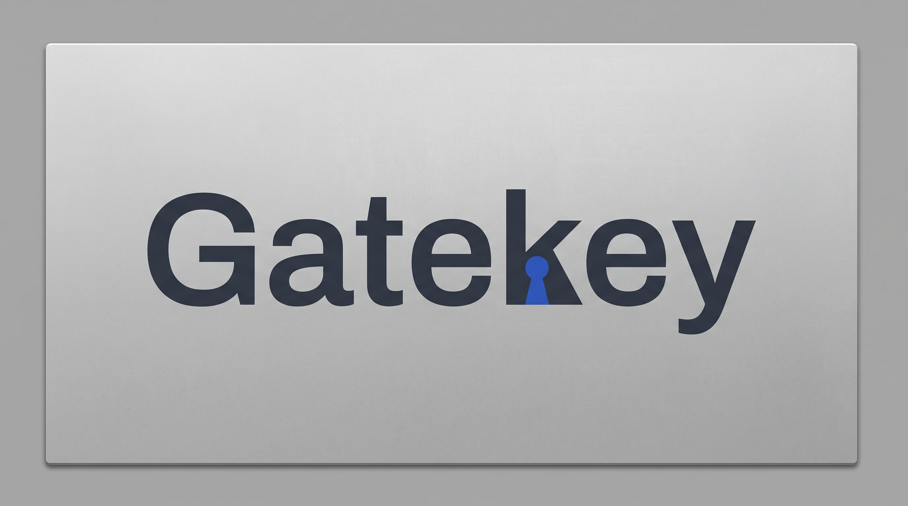

Your tool sends
- host
- 127.0.0.1:8181
- model
- groq/llama-3.3-70b-versatile
- authorization
- Bearer sk-dummy

One local endpoint. Your keys stay on this machine.
Stored as plain text in ~/.config/gatekey-proxy/config.json,
readable only by you (mode 0600). Not encrypted.
Sends one request through the proxy on the route above.